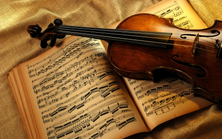
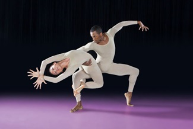
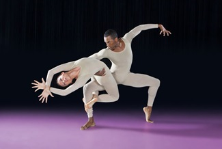

Если вы выбрали нужный вам стикер, начните заполнять его текстом.
Стикеры будут накладываться друг на друга
 Небольшое исследование, результаты которого были опубликованы на сайте Американской ассоциации трудотерапии, показало, что классическая музыка имеет некие реабилитационные свойства. Эксперимент проводился при участии 16 пациентов, перенесших инсульт правого полушария головного мозга. На протяжении одной недели исследователи вели наблюдение за тем, как классическая музыка, белый шум и тишина влияют на внимательность и визуальное восприятие каждого больного. Полученные результаты фиксировались учеными при помощи специально разработанных визуально-аналоговых шкал (ВАШ, обычно используются для определения степени интенсивности боли). Как и в случаях с креативностью и вождением, тишина не оправдала ожиданий ученых, а вот классическая музыка значительно увеличила длительность концентрации внимания пациентов и улучшила их визуальную память
Рок-музыка, как известно, возникла на основе негритянских идолопоклонений, первобытных мистических песнопений. Африканские колдуны неплохо знали гипнотизирующее воздействие ритмической громкой музыки. Свойственный ей бит-ритм вызывает в организме определенные изменения — меняет пульс, дыхание, содержание сахара в крови, возникает нервное возбуждение: «...когда удары музыкального ритма начинают вдруг совпадать с ударами вашего сердца, создается впечатление, что внутри вас раскачивается тяжелый колокольный язык, который лупит о ваши ребра, о все ваши клетки, и все гудит и звенит, и не то вы сейчас сорветесь с места и начнете неистовствовать в своих движениях, не то взорветесь и разлетитесь на мелкие части
Для сохранения здоровья швейцарские медики призывают играть на пианино. Всего лишь полгода музыкальных упражнений уменьшают риски, сокращающие продолжительность жизни. 134 человека преклонного возраста приняли участие в исследованиях. Создали две группы. Первая группа один раз в неделю занималась игрой на пианино. Занятие длилось один час. Из первой группы многие получали азы музыкальной грамоты впервые. Вторая группа не занималась игрой на пианино.
Если вы выбрали нужный вам стикер, начните заполнять его текстом.
 
